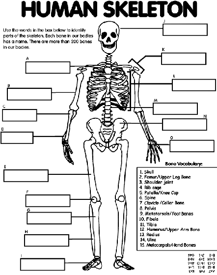

This is an exam dedicated to helping you to memorize where different bones are located, as well as being able to identify them.
For all questions, please refer to the image below:
Source:https://www.crayola.com/free-coloring-pages/print/human-skeleton-coloring-page/
1. Q